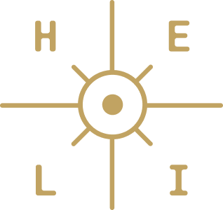
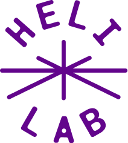
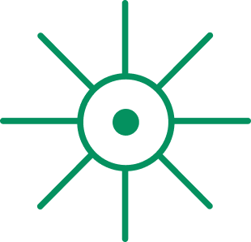

Human-Centered Environments for Learning Innovation (HELI) Lab is grounded in learning sciences principles and driven by the belief that technology should serve people, not the other way around. We design learning environments that bring people together, build community, and create the conditions for the deep learning that follows when people feel seen, think together, and build meaning through shared experience. We theorize about, support learning with, and learn about emerging technologies, always asking not just what technology can do, but what it should do, and what must remain distinctly human. Our work centers perspectives on learning where children and communities are partners, not subjects. We go "back and forward between the possible and the actual" (Bruner), imagining technological futures that are innovative, safe, and just.



